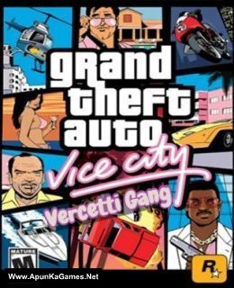
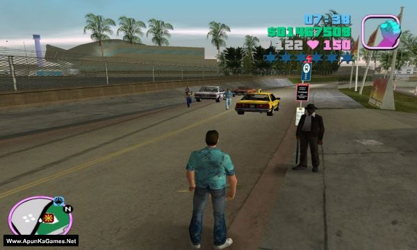
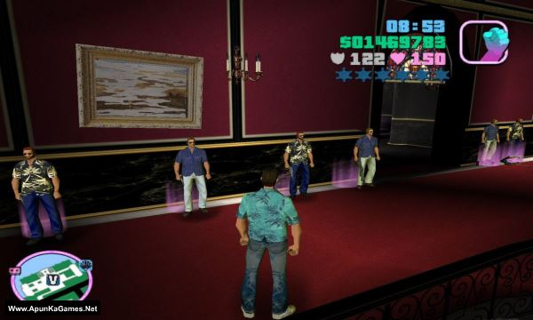

gta vice city – Overview – Free Download – PC – Compressed – Specs – Screenshots
Type of game: Action, Adventure, Open World
GTA San Vice (2 GB) is a Total Conversion Mod for Grand Theft Auto: vice city This Mod replaces vice city Map completely with the Vice City Map. But thas not all.In San Vice you can find many new Features.For example you can make the “Hot Spotlight”-Mission from Vice City now in San Vice.Also there is a new Tanker on the Ocean next to the Airbase.Want to make party in the Clubs?Sure you can do it in San Vice.You can smoke Weed or drink alcohol in the Clubs.Also you can dance in one Club with Tenpenny and Pulaski.A big features is the ModMenu where you can Spawn Cars, select Unlimit Health, Call Bodyguards, get Weapons, Move the Camera free in San Vice and other cool stuff.Paths are included and some Vice City cars were converted for San Vice.The great Car Saloon made by ZAZ is also included with many features. Classic Missions are Included and famouse SA-Features, like Billiards, Basketball, Minigames and poker. The Airship you maybe remember from Vice City is back in San Vice.It’s flying from the Lighthouse to NorthBeach and back every time. A Huge Mission is included the “Rollin Rocket”.Gangwar Features is available and a mission to gain the Mansion and a Boat Mission with the Cortez Ship.
-
os: Windows XP/Vista/7
-
Processor: 1.8 GHz
-
Graphics Card: NVIDIA GeForce GT 290 2GB or AMD Radeon HD 7850 2GB
-
DirectX: Version 10
-
RAM: 265 GB



How to Dowenload game
gta vice city Download

Game Size: 1.22 GB